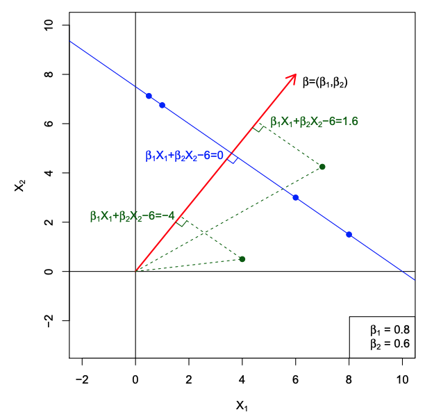
Week 13: SVM, Neural Network, & Decision Tree
Reference
Gareth James, Daniela Witten, Trevor Hastie and Robert Tibshirani, An Introduction to Statistical Learning: with Applications in R.
Pang-Ning Tan,Michael Steinbach, Vipin Kumar, Introduction to Data Mining, 2nd edition Published by Pearson (January 4, 2018)
Objectives
Students will
Understand the idea of support vector machine
Understand the idea of neural network
Understand the idea of tree based methods
Know how to use conduct SVM, NN, and decision tree to predict the labels and assess the models in R
Support Vector Machine
Key idea: find a linear hyperplane (decision boundary) that will separate the data.
If we cannot, we get creative in two ways:
We soften what we mean by separates, and
We enrich and enlarge the feature space so that separation is possible.
What is a Hyperplane?
A hyperplane in \(p\) dimensions is a flat affine subspace of dimension \(p − 1\).
In general the equation for a hyperplane has the form
\[\beta_0 + \beta_1X_1 + \beta_2X_2 + \cdots + \beta_pX_p = 0.\]
In \(p = 2\) dimensions a hyperplane is a line.
If \(β_0 = 0\), the hyperplane goes through the origin, otherwise not.
The vector \(\beta = (\beta_1, \beta_2, \cdots , \beta_p)\) is called the normal vector — it points in a direction orthogonal to the surface of a hyperplane.
Hyperplane in 2 Dimensions
Separating Hyperplanes
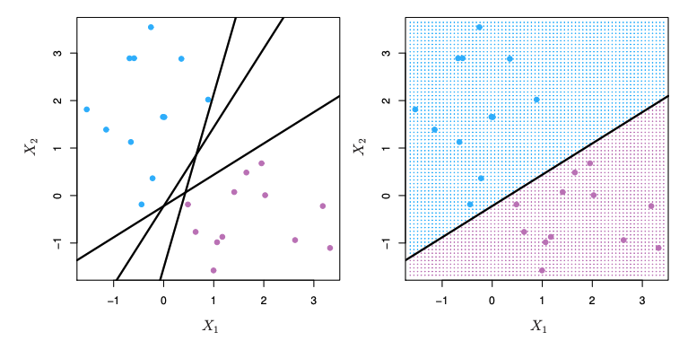
If \(f(X) = \beta_0 + \beta_1X_1 + \beta_2X_2 + \cdots + \beta_pX_p\), then \(f(X) > 0\) for points on one side of the hyperplane, and \(f(X) < 0\) for points on the other.
If we code the colored points as \(Y_i = +1\) for blue, say, and \(Y_i = −1\) for mauve, then if \(Y_i\cdot f(X_i) > 0\) for all \(i\), \(f(X) = 0\) defines a separating hyperplane.
Maximal Margin Classifier
Among all separating hyperplanes, find the one that makes the biggest gap or margin between the two classes.
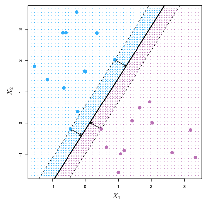
Constrained optimization problem
\[\begin{align*} & \max_{\beta_0,\beta_1,\ldots,\beta_p} M \\ \text{subject to} & \sum_{j=1}^p \beta_j^2 =1, \\ & y_i(\beta_0+\beta_1x_{i1} + \ldots + \beta_px_{ip}) \ge M \forall i =1,\ldots,N. \end{align*}\]
This can be rephrased as a convex quadratic program, and solved efficiently. The function svm() in package e1071 solves this problem efficiently.
Support Vector Machine in R
We still investigate South African Heart Disease dataset.
160 cases of MI (myocardial infarction) and 302 controls (all male in age range 15-64), from Western Cape, South Africa in early 80s.
Overall prevalence very high in this region: 51%.
Measurements on seven predictors (risk factors).
Goal is to identify relative strengths and directions of risk factors.
This was part of an intervention study aimed at educating the public on healthier diets
# import ElemStatLearn
library(ElemStatLearn)
summary(SAheart) sbp tobacco ldl adiposity
Min. :101.0 Min. : 0.0000 Min. : 0.980 Min. : 6.74
1st Qu.:124.0 1st Qu.: 0.0525 1st Qu.: 3.283 1st Qu.:19.77
Median :134.0 Median : 2.0000 Median : 4.340 Median :26.11
Mean :138.3 Mean : 3.6356 Mean : 4.740 Mean :25.41
3rd Qu.:148.0 3rd Qu.: 5.5000 3rd Qu.: 5.790 3rd Qu.:31.23
Max. :218.0 Max. :31.2000 Max. :15.330 Max. :42.49
famhist typea obesity alcohol age
Absent :270 Min. :13.0 Min. :14.70 Min. : 0.00 Min. :15.00
Present:192 1st Qu.:47.0 1st Qu.:22.98 1st Qu.: 0.51 1st Qu.:31.00
Median :53.0 Median :25.80 Median : 7.51 Median :45.00
Mean :53.1 Mean :26.04 Mean : 17.04 Mean :42.82
3rd Qu.:60.0 3rd Qu.:28.50 3rd Qu.: 23.89 3rd Qu.:55.00
Max. :78.0 Max. :46.58 Max. :147.19 Max. :64.00
chd
Min. :0.0000
1st Qu.:0.0000
Median :0.0000
Mean :0.3463
3rd Qu.:1.0000
Max. :1.0000 pairs(SAheart[,1:7],col= ifelse(SAheart$chd==1,'red','blue'))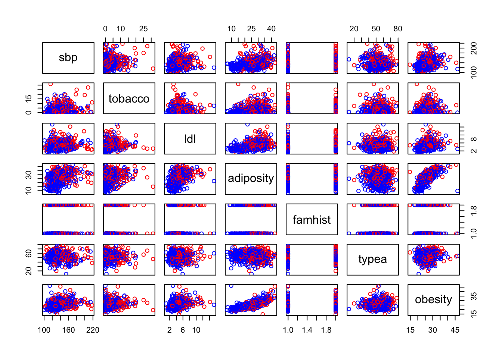
Split the data set into training and test.
i <- sample(2, nrow(SAheart), replace=TRUE, prob=c(0.8, 0.2))
SAtrainingData <- SAheart[i==1,]
SAtestData <- SAheart[i==2,]
summary(SAtrainingData) sbp tobacco ldl adiposity
Min. :101.0 Min. : 0.0000 Min. : 0.980 Min. : 8.66
1st Qu.:124.0 1st Qu.: 0.0575 1st Qu.: 3.297 1st Qu.:19.55
Median :134.0 Median : 2.0000 Median : 4.310 Median :26.00
Mean :138.6 Mean : 3.6122 Mean : 4.737 Mean :25.26
3rd Qu.:148.0 3rd Qu.: 5.5000 3rd Qu.: 5.770 3rd Qu.:31.30
Max. :216.0 Max. :31.2000 Max. :15.330 Max. :42.17
famhist typea obesity alcohol
Absent :214 Min. :20.00 Min. :14.70 Min. : 0.0000
Present:154 1st Qu.:47.00 1st Qu.:22.65 1st Qu.: 0.3425
Median :53.00 Median :25.73 Median : 6.6150
Mean :52.91 Mean :25.90 Mean : 16.3525
3rd Qu.:59.25 3rd Qu.:28.41 3rd Qu.: 23.7375
Max. :78.00 Max. :46.58 Max. :147.1900
age chd
Min. :15.00 Min. :0.0000
1st Qu.:32.00 1st Qu.:0.0000
Median :45.00 Median :0.0000
Mean :42.82 Mean :0.3397
3rd Qu.:56.00 3rd Qu.:1.0000
Max. :64.00 Max. :1.0000 summary(SAtestData) sbp tobacco ldl adiposity
Min. :106.0 Min. : 0.0000 Min. : 1.430 Min. : 6.74
1st Qu.:124.0 1st Qu.: 0.0825 1st Qu.: 3.232 1st Qu.:22.05
Median :134.0 Median : 1.8600 Median : 4.475 Median :26.57
Mean :137.3 Mean : 3.7273 Mean : 4.754 Mean :25.98
3rd Qu.:143.8 3rd Qu.: 5.7000 3rd Qu.: 5.843 3rd Qu.:30.79
Max. :218.0 Max. :25.0100 Max. :11.610 Max. :42.49
famhist typea obesity alcohol
Absent :56 Min. :13.00 Min. :19.38 Min. : 0.0000
Present:38 1st Qu.:47.00 1st Qu.:23.92 1st Qu.: 0.8725
Median :54.00 Median :26.02 Median : 8.3900
Mean :53.87 Mean :26.61 Mean : 19.7530
3rd Qu.:62.00 3rd Qu.:28.81 3rd Qu.: 23.3775
Max. :72.00 Max. :45.72 Max. :144.0000
age chd
Min. :16.00 Min. :0.0000
1st Qu.:31.00 1st Qu.:0.0000
Median :43.50 Median :0.0000
Mean :42.81 Mean :0.3723
3rd Qu.:54.75 3rd Qu.:1.0000
Max. :64.00 Max. :1.0000 Fit the training data and predict the training data and calculate the confusion matrix
#Need to include package e1071
library(e1071)Warning: package 'e1071' was built under R version 4.5.3
Attaching package: 'e1071'The following object is masked from 'package:ggplot2':
elementmysvm<- svm(as.factor(chd)~.,data=SAtrainingData)
predsvm<-predict(mysvm,SAtrainingData)
confMat<-table(SAtrainingData$chd,predsvm)
print(confMat) predsvm
0 1
0 233 10
1 61 64#accuracy is
sum(diag(confMat))/sum(confMat)[1] 0.8070652#precision is
confMat[2,2]/sum(confMat[,2])[1] 0.8648649#recall is
confMat[2,2]/sum(confMat[2,])[1] 0.512Predict the test data and calculate the confusion matrix
predsvm<-predict(mysvm,SAtestData)
confMat<-table(SAtestData$chd,predsvm)
print(confMat) predsvm
0 1
0 54 5
1 21 14#accuracy is
sum(diag(confMat))/sum(confMat)[1] 0.7234043#precision is
confMat[2,2]/sum(confMat[,2])[1] 0.7368421#recall is
confMat[2,2]/sum(confMat[2,])[1] 0.4In-Class Exercise: Support Vector Machine
Obtaining the Breat Cancer Wisconsin data set
Split the dataset to training and test datasets
Use support vector machine to build a classifier on the training dataset
Predict the test dataset and generate a confusion matrix to calculate accuracy, precision, and recall
Artificial Neural Network (ANN)
An Example
Output \(Y\) is 1 at least two of the three inputs are equal to 1.
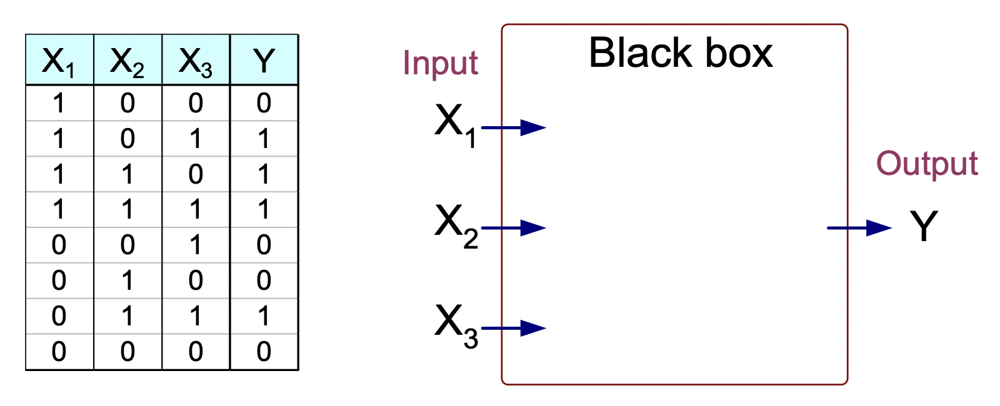
How to determine the black box?
\[\begin{align*} Y &= I (0.3 X_1+ 0.3 X_2 + 0.3X_3 - 0.4 > 0)\\ \text{where } & I(z) = \begin{cases} 1 & \text{ if } z \text{ is ture}\\ 0 & \text{otherwise} \end{cases} \end{align*}\]
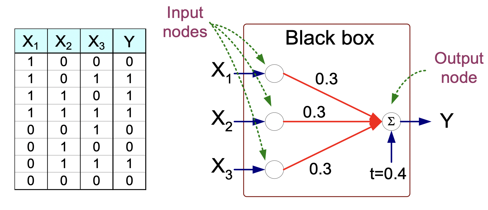
- Model is an assembly of inter-connected nodes and weighted links
- Output node sums up each of its input value according to the weights of its links
- Compare output node against some threshold \(t\)
General Structure of ANN
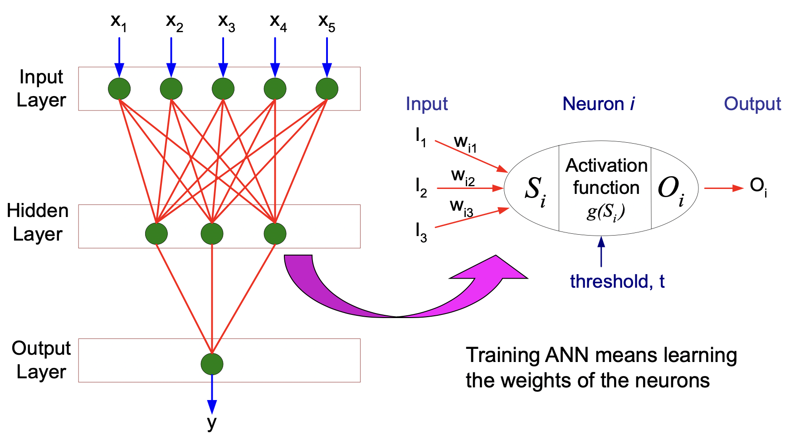
Algorithm for learning ANN
Initialize the weights (\(w_0, w_1, \ldots, w_k\))
Adjust the weights in such a way that the output of ANN is consistent with class labels of training examples, where the objective function is \[E = \sum_i\left[Y_i -f(w_i,X_i)\right]^2\] The goal is to find the weights \(w_i\)’s that minimize the above objective function
Neural Network in R
We still investigate South African Heart Disease dataset with the same split.
160 cases of MI (myocardial infarction) and 302 controls (all male in age range 15-64), from Western Cape, South Africa in early 80s.
Overall prevalence very high in this region: 51%.
Measurements on seven predictors (risk factors).
Goal is to identify relative strengths and directions of risk factors.
This was part of an intervention study aimed at educating the public on healthier diets
Fit the training data and predict the training data and calculate the confusion matrix
#load package
library("nnet")
# 2 Layers
mynnet<-nnet(as.factor(chd)~.,data=SAtrainingData,size=3,maxit= 200)# weights: 34
initial value 235.869876
iter 10 value 222.697302
iter 20 value 215.892126
iter 30 value 208.790610
iter 40 value 208.396736
iter 50 value 208.166205
iter 60 value 207.871181
iter 70 value 207.870165
final value 207.870083
convergedprednet<-predict(mynnet,SAtrainingData,type="class")
# Fix the levels to ensure a 2x2 confusion matrix
classes <- levels(as.factor(SAtrainingData$chd))
confMat <- table(
factor(SAtrainingData$chd, levels = classes),
factor(prednet, levels = classes)
)
print(confMat)
0 1
0 243 0
1 125 0# Accuracy
sum(diag(confMat)) / sum(confMat)[1] 0.6603261# Precision
if (sum(confMat[, 2]) == 0) {
NA_real_
} else {
confMat[2, 2] / sum(confMat[, 2])
}[1] NA# Recall
if (sum(confMat[2, ]) == 0) {
NA_real_
} else {
confMat[2, 2] / sum(confMat[2, ])
}[1] 0Predict the test data and calculate the confusion matrix
prednet <- predict(mynnet, SAtestData, type = "class")
confMat <- table(
factor(SAtestData$chd, levels = classes),
factor(prednet, levels = classes)
)
print(confMat)
0 1
0 59 0
1 35 0# Accuracy
sum(diag(confMat)) / sum(confMat)[1] 0.6276596# Precision
if (sum(confMat[, 2]) == 0) {
NA_real_
} else {
confMat[2, 2] / sum(confMat[, 2])
}[1] NA# Recall
if (sum(confMat[2, ]) == 0) {
NA_real_
} else {
confMat[2, 2] / sum(confMat[2, ])
}[1] 0In-Class Exercise: Neural Network
Obtaining the Breat Cancer Wisconsin data set
Split the dataset to training and test datasets
Use neural network to build a classifier on the training dataset
Predict the test dataset and generate a confusion matrix to calculate accuracy, precision, and recall
Tree-based Methods
These involve stratifying or segmenting the predictor space into a number of simple regions.
Since the set of splitting rules used to segment the predictor space can be summarized in a tree, these types of approaches are known as decision-tree methods.
Pros and Cons
Tree-based methods are simple and useful for interpretation.
However they typically are not competitive with the best supervised learning approaches in terms of prediction accuracy.
We will discuss random forests in Module 8. This method grows multiple trees which are then combined to yield a single consensus prediction.
Combining a large number of trees can often result in dramatic improvements in prediction accuracy, at the expense of some loss interpretation.
Tree-based methods can be used in both regression and classification. We focus on classification.
Examle of A Decision Tree
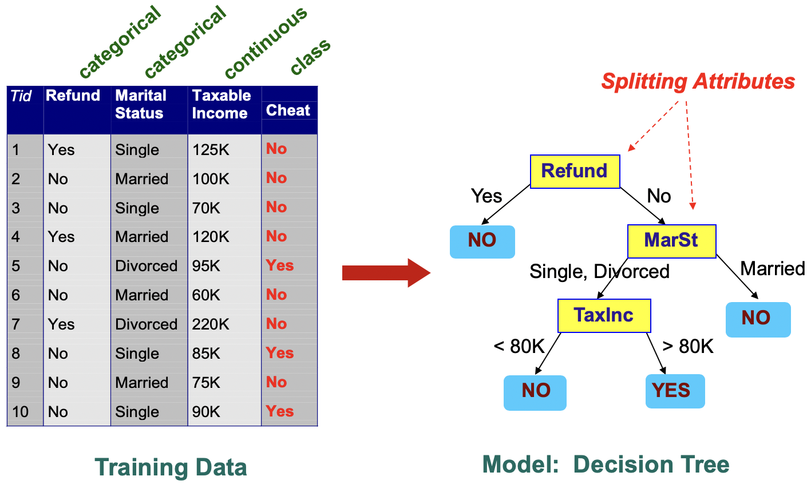
Trees Induction
Greedy strategy: Split the records based on an attribute test that optimizes certain criterion.
Issues:
- Determine how to split the records
- How to specify the attribute test condition?
- How to determine the best split?
- Determine when to stop splitting
- Determine how to split the records
How to Specify Test Condistion?
- Depends on attribute types
- Nominal
- Ordinal
- Continuous
- Depends on number of ways to split
- Binary split
- Multi-way split
Splitting Based on Nominal Attributes
- Multi-way split: Use as many partitions as distinct values.
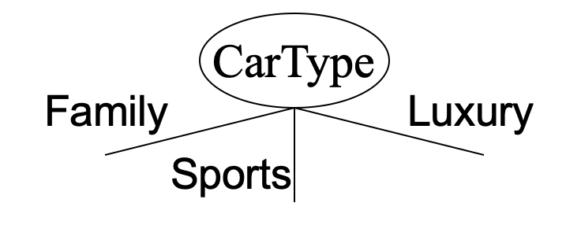
- Binary split: Divides values into two subsets. Need to find optimal partitioning.
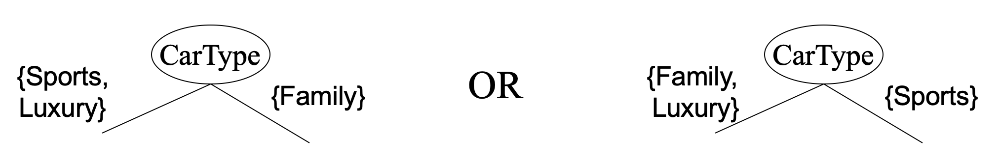
Splitting Based on Ordinal Attributes
- Multi-way split:
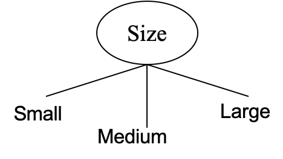
- Binary split:
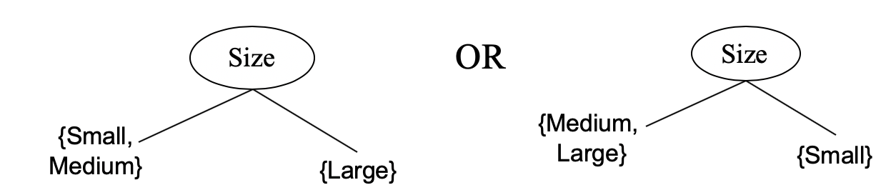
Question: What about this split?
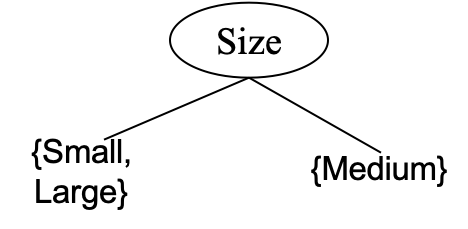
Splitting Based on Continuous Attributes
Discretization to form an ordinal categorical attribute
Binary Decision: \(A < v\) or \(A \ge v\)
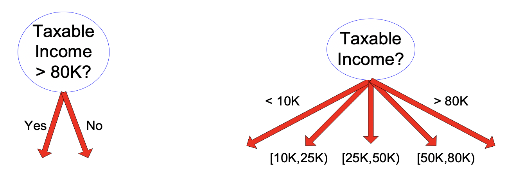
How to determine the Best Split
- Greedy approach: Nodes with homogeneous class distribution are preferred
- Need a measure of node impurity
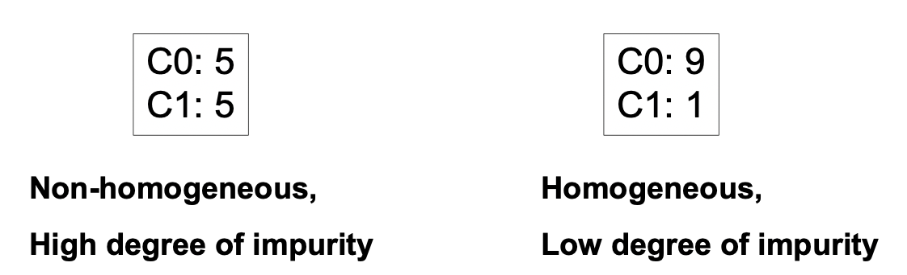
Measures of Node Impurity
- Gini Index
For a given node \(t\): \[\text{GINI}(t) = 1- \sum_{j} [p(j|t)]^2\] where \(p(j|t)\) is the relative frequency of class \(j\) at node \(t\).
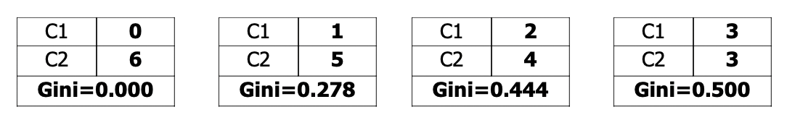
Maximum \(1 - 1/n_c\): records are equally distributed among all classes
Minimum 0: all records belong to one class
Entropy
For a given node \(t\): \[\text{Entropy} (t)= -\sum_j p(j|t) \log_2{p(j|t)},\] where \(p(j|t)\) is the relative frequency of class \(j\) at node \(t\)
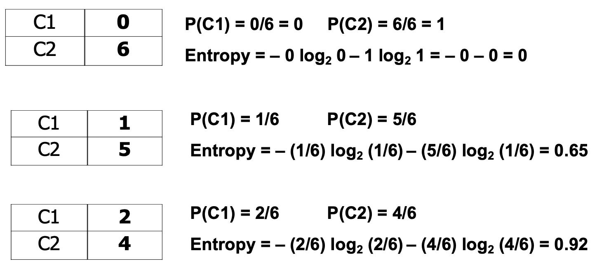
-Maximum \(\log_2{n_c}\): records are equally distributed among all classes
-Minimum 0: all records belong to one class
- Misclassification error
For a given node \(t\):
\[\text{Classification Error}(t) = 1-\max_j p(j|t) \] where \(p(j|t)\) is the relative frequency of class \(j\) at node \(t\)
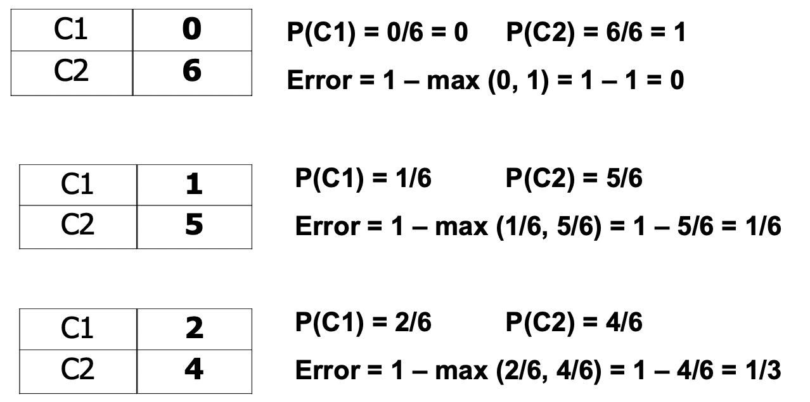
Maximum \(1-1/n_c\): records are equally distributed among all classes
Minimum 0: all records belong to one class
For a 2-class problem:
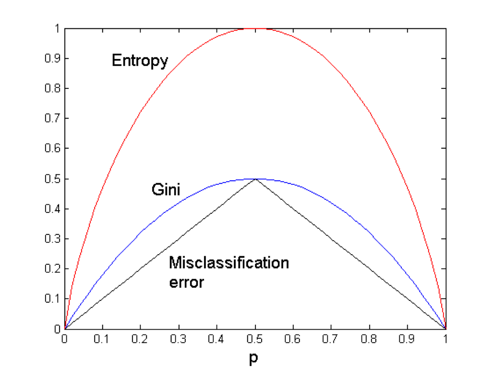
We can use Information Gain or Gain Ratio to determine if we want to grow the tree.
Stopping Criteria for Tree Induction
- Stop expanding a node when all the records belong to the same class
- Stop expanding a node when all the records have similar attribute values
- Early termination
How to Address overfitting
- Pre-Pruning (Early Stopping Rule)
- Typical stopping conditions for a node:
- Stop expanding a node when all the records belong to the same class
- Stop expanding a node when all the records have similar attribute values
- More restrictive conditions:
- Stop if number of records is less than some user-specified threshold
- Stop if class distribution of instances are independent of the available features (e.g., using \(\chi^2\) test)
- Stop if expanding the current node does not improve impurity measures (e.g., Gini or information gain)
- Typical stopping conditions for a node:
- Post-Pruning
- Grow decision tree to its entirety and trim the nodes of the decision tree in a bottom-up fashion
- If generalization error improves after trimming, replace sub-tree by a leaf node
Decision Tree in R
We still investigate South African Heart Disease dataset with the same split.
160 cases of MI (myocardial infarction) and 302 controls (all male in age range 15-64), from Western Cape, South Africa in early 80s.
Overall prevalence very high in this region: 51%.
Measurements on seven predictors (risk factors).
Goal is to identify relative strengths and directions of risk factors.
This was part of an intervention study aimed at educating the public on healthier diets
Fit the training data and predict the training data and calculate the confusion matrix
#Need to include package rpart
library(rpart)
myFormula<-as.factor(SAtrainingData$chd)~.
mytree<- rpart(myFormula,data=SAtrainingData)
print(mytree)n= 368
node), split, n, loss, yval, (yprob)
* denotes terminal node
1) root 368 125 0 (0.66032609 0.33967391)
2) age< 30.5 85 6 0 (0.92941176 0.07058824) *
3) age>=30.5 283 119 0 (0.57950530 0.42049470)
6) famhist=Absent 149 47 0 (0.68456376 0.31543624)
12) typea< 64.5 136 38 0 (0.72058824 0.27941176)
24) tobacco< 7.635 113 26 0 (0.76991150 0.23008850)
48) sbp< 135 53 6 0 (0.88679245 0.11320755) *
49) sbp>=135 60 20 0 (0.66666667 0.33333333)
98) typea< 50.5 31 5 0 (0.83870968 0.16129032) *
99) typea>=50.5 29 14 1 (0.48275862 0.51724138)
198) ldl< 3.88 10 1 0 (0.90000000 0.10000000) *
199) ldl>=3.88 19 5 1 (0.26315789 0.73684211) *
25) tobacco>=7.635 23 11 1 (0.47826087 0.52173913)
50) tobacco>=11 15 6 0 (0.60000000 0.40000000) *
51) tobacco< 11 8 2 1 (0.25000000 0.75000000) *
13) typea>=64.5 13 4 1 (0.30769231 0.69230769) *
7) famhist=Present 134 62 1 (0.46268657 0.53731343)
14) age< 50.5 65 25 0 (0.61538462 0.38461538)
28) typea< 53.5 27 5 0 (0.81481481 0.18518519) *
29) typea>=53.5 38 18 1 (0.47368421 0.52631579)
58) tobacco>=5.19 14 4 0 (0.71428571 0.28571429) *
59) tobacco< 5.19 24 8 1 (0.33333333 0.66666667) *
15) age>=50.5 69 22 1 (0.31884058 0.68115942)
30) ldl< 4.345 22 10 0 (0.54545455 0.45454545)
60) adiposity>=27.415 12 3 0 (0.75000000 0.25000000) *
61) adiposity< 27.415 10 3 1 (0.30000000 0.70000000) *
31) ldl>=4.345 47 10 1 (0.21276596 0.78723404) *#Plot a fancy decision tree
#need package rpart.plot
library(rpart.plot)Warning: package 'rpart.plot' was built under R version 4.5.3rpart.plot(mytree, uniform=TRUE, main="Classification Tree for Heart Disease")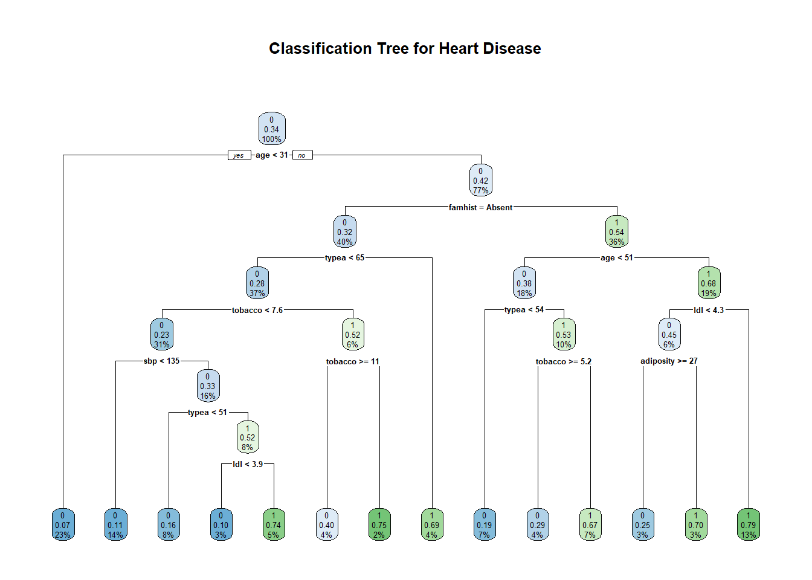
Predict the test data and calculate the confusion matrix
treepred <- predict(mytree,newdata=SAtestData,type="class")
confMat<-table(SAtestData$chd,treepred)
print(confMat) treepred
0 1
0 42 17
1 13 22#accuracy is
sum(diag(confMat))/sum(confMat)[1] 0.6808511#precision is
confMat[2,2]/sum(confMat[,2])[1] 0.5641026#recall is
confMat[2,2]/sum(confMat[2,])[1] 0.6285714Prune the tree and predict the test data and calculate the confusion matrix
mytree_prune<- prune(mytree, cp = 0.04)
print(mytree_prune)n= 368
node), split, n, loss, yval, (yprob)
* denotes terminal node
1) root 368 125 0 (0.66032609 0.33967391)
2) age< 30.5 85 6 0 (0.92941176 0.07058824) *
3) age>=30.5 283 119 0 (0.57950530 0.42049470)
6) famhist=Absent 149 47 0 (0.68456376 0.31543624) *
7) famhist=Present 134 62 1 (0.46268657 0.53731343)
14) age< 50.5 65 25 0 (0.61538462 0.38461538) *
15) age>=50.5 69 22 1 (0.31884058 0.68115942) *rpart.plot(mytree_prune,uniform=TRUE, main="Pruned Classification Tree for Heart Disease")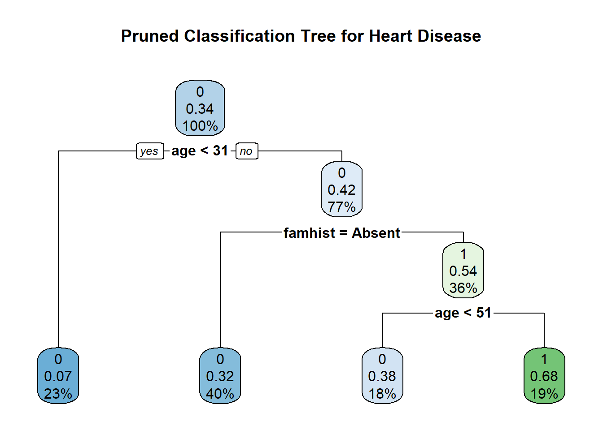
treepred <- predict(mytree_prune,newdata=SAtestData,type="class")
confMat<-table(SAtestData$chd,treepred)
print(confMat) treepred
0 1
0 54 5
1 19 16#accuracy is
sum(diag(confMat))/sum(confMat)[1] 0.7446809#precision is
confMat[2,2]/sum(confMat[,2])[1] 0.7619048#recall is
confMat[2,2]/sum(confMat[2,])[1] 0.4571429In-Class Exercise: Decision Tree
Obtaining the Breat Cancer Wisconsin data set
Split the dataset to training and test datasets
Use decision tree to build a classifier on the training dataset
Predict the test dataset and generate a confusion matrix to calculate accuracy, precision, and recall